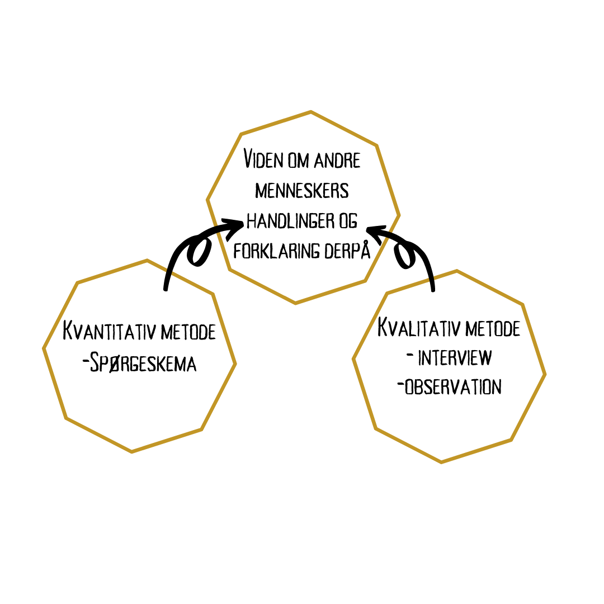

Kvalitativ og kvantitativ metode bruges til, at kunne forstå
en gruppe menneskers handlinger og tanke -
ud fra målbare data eller obervationer, hvor målet er at lytte og
opnå forståelse.
KVALITATIV METODE
Med den kvalitative metode arbejdes der med at opnå en forståelse for det enkelte individ, og hvorfor vedkommende tænker og agere som det gør.
Metoden er dybdegående, nærgående og nuanceret i de svar man opnår - oftest gennem interviews.
Det handler om at lytte til folk og observere på dem - på den måde kan man med fordel få, nogle svar man ikke selv havde tænkt på.
Det kan være enormt tidskrævende at interviewe en hel gruppe mennesker, men resultatet er ofte nuanceret
og giver en masse stof at arbejde videre med.
Det kan være enormt tidskrævende at interviewe en hel gruppe mennesker, men resultatet er ofte nuanceret og giver en masse stof at
arbejde videre med. Man kan med fordel arbejde med fokusgrupper / gruppeinterviews når man ønsker at arbejde med en større gruppe mennesker,
her for at spare lidt tid.
Den kvalitative metode er langt mere tilrettelagt end den kvantitative metode - fordi den kræver nøje overvejelser omkring hvem man
ønsker at interviewe og hvad man ønsker at opnå med undersøgelsen.
MENINGSKONDENSERING
- Kilde:https://c-samf.systime.dk/?id=716
.
KVANTITATIVE METODE
Kvantitativ metode handler om at kunne måle et givent resultat. Det kan f.eks. handle om, at lave en undersøgelse med et
spørgeskema med lukke spørgsmål. Når man benytter spørgeskema skal man være sikker på, at repræsentativt -
det vil sige, at undersøgelsen gælder den gruppe mennesker man undersøger.
Eksempel: Man vil undersøge de studerendes trivsel på EA-Dania og udarbejder et spørgeskema som den enkelte elev bliver bedt om at udfylde.
Her nytter det ikke, at folk udefra som ingen tilknytning til skolen, besvarer det pågældende spørgeskema, da resultatet hermed ikke bliver retvisende. Med spørgeskema får man opnå mange ens svar fra de adspurgte og hermed måle resultater. Ulempen er, at man ikke får svar på andet end det man
spørger om og opnår dermed ikke svar udover det, man selv har forestillet sig kunne
være en problemstilling/udfordring ift. trivsel på EA-Dania.
- Kilde: https://c-samf.systime.dk/?id=716
.
TRANSSKRIBERING
I ordets reneste form betyder det at ”overføre til skrevet form”. Transskribere kommer fra det latinske transcribere og betyder ”at kopiere, skrive over, overføre” – med dette kan man sige at det er rimelig selvforklarende.
Transskription er en proces, hvor man nedskriver udtalelser. Man kan f.eks. optage et langt interview og herefter skrive essensen af interviewet ned. Transskribering er en god løsning, når man skal igennem et større interview - selvom man er flere om at interviewe, kan det være svært at få skrevet alt ned og følge med.
Ved at optage samtalen, kan man efter interviewet afspille lydfilen, pause, spole tilbage osv. indtil man har fået alt det med, som man ønsker at bruge til sit interview. En anden fordel er, at man kan citere et menneske i f.eks. en avis og vedkommende ikke mener, at have udtalt det på pågældende udsagn. Her kan man benytte sin lydfil til, at dokumentere at have citeret den interviewede korrekt. Ulempen ved transskription er, at det er en lang og tidskrævende process. En transskription kan tage op til 5 gange så lang tid som selve interviewet.
Kilde: https://metodeguiden.au.dk/transskription/
